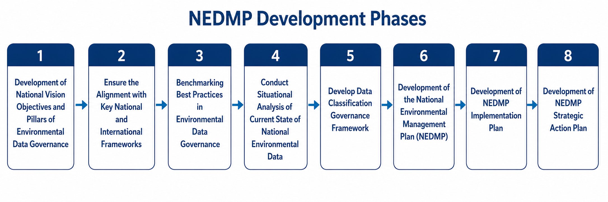
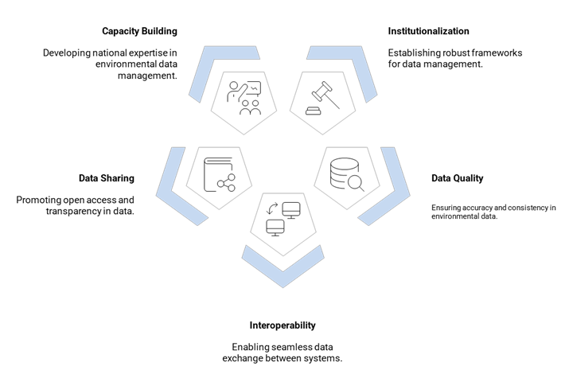
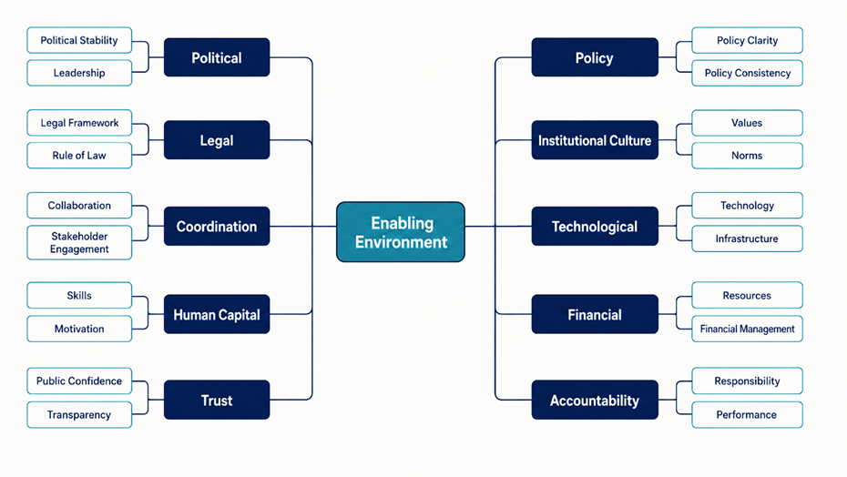
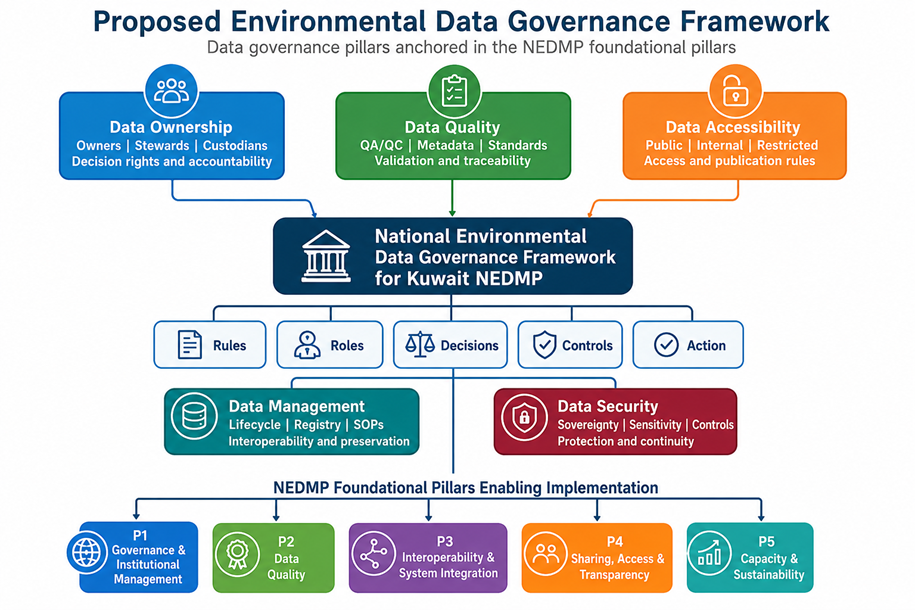

Direction and legitimacy
Political stability, leadership, a clear legal framework and consistent policy provide authority and continuity.
Better Data. Better Decisions. Better Environment for Kuwait.
An integrated national framework for governing, improving, connecting, sharing and sustaining Kuwait's environmental data.
The National Environmental Data Management Plan is a key pillar in strengthening the role of the Environment Public Authority as a leading institution for environmental protection and sustainable development in the State of Kuwait. Through the Plan, the Authority will be able to coordinate efforts across government entities and ensure the availability of accurate and reliable environmental data to support informed, science-based decision-making. The Plan will also promote transparency and establish effective mechanisms for public engagement, helping to raise environmental awareness and enabling Kuwait to address current and emerging environmental challenges more effectively and efficiently.

The NEDMP vision is to establish an integrated, reliable and interoperable national environmental data management system that unifies environmental datasets, improves quality and accessibility, strengthens transparency and enables evidence-based policy-making.
This initiative responds to the requirements of Articles 116, 117 and 118 of Kuwait’s Environment Protection Law, particularly Article 116, which calls for the establishment of an integrated environmental data management system to support the regular and reliable exchange of data between government entities and the Environment Public Authority. The NEDMP will strengthen environmental data collection and analysis, enhance transparency and provide the evidence needed for informed environmental decision-making. It will also establish clear mechanisms for the responsible dissemination and public accessibility of environmental data, while defining the roles and responsibilities of the relevant institutions in accordance with the law.
Each level answers a different implementation question and preserves a clear line from national intent to annual delivery.
The methodology combines stakeholder participation, evidence review, institutional diagnosis, governance design and phased implementation planning.

Select an objective and framework to review the practical relationship identified in the NEDMP evidence base.
Successful implementation depends on mutually reinforcing political, legal, institutional, technological, financial and social conditions.

Effective environmental data governance depends on conditions beyond technology. Political stability and leadership establish direction; law and policy provide certainty; coordination and institutional culture sustain collaboration; human capital and technology enable delivery; financial resources, trust and accountability support performance and public confidence. The NEDMP treats these conditions as mutually reinforcing requirements for implementation.
Political stability, leadership, a clear legal framework and consistent policy provide authority and continuity.
Coordination, institutional culture, skills, technology, infrastructure and sustainable financing turn policy into practice.
Stakeholder engagement, transparency, public confidence, responsibility and performance management sustain participation and results.
Role clarification, ownership, metadata, QA/QC, classification, security and access rules should be established before large-scale integration, publication or advanced analytics.
The readiness values are composite findings reported in the all-stakeholder assessment. The principal dashboard uses the latest consolidated values and retains report page references in the source registry. Item-level denominators vary with questionnaire completion.
| Indicator | Value | Source |
|---|
Kuwait's environmental-data ecosystem spans monitoring networks, administrative records, geospatial information, statistics, modelling, reporting datasets and national information systems.
The proposed framework connects data ownership, quality and accessibility with management and security controls, translating the five foundational pillars into rules, roles, decisions and accountable action.

The proposed model links every dataset to an access route, security expectation, publication decision and review requirement.
Proposed arrangement, subject to national approval and legal review.
The sequence keeps institutional decisions, standards and controls ahead of integration, publication and advanced use.
Browse the strategic framework, diagnostics, governance instruments, implementation plans and source documents used to develop the NEDMP.
The consolidated strategic document covering the national mandate, vision, objectives, pillars and implementation direction.
Download PDFAll links use relative paths for compatibility with local use and GitHub Pages. Original source filenames are preserved in the metadata mapping.
The administration interface allows approved updates to be prepared in English and Arabic and included in a future published version.
Contact details will be added following confirmation by the competent national authority.